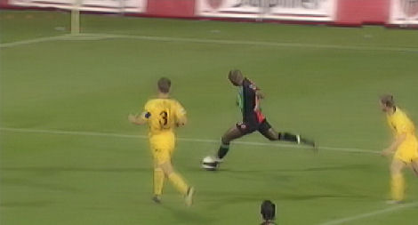
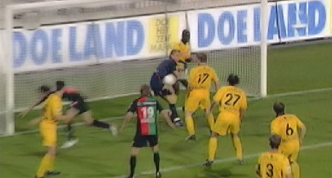
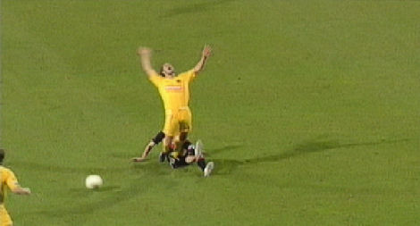
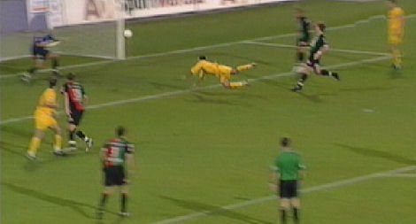
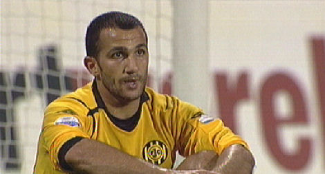
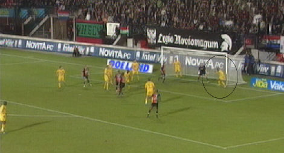
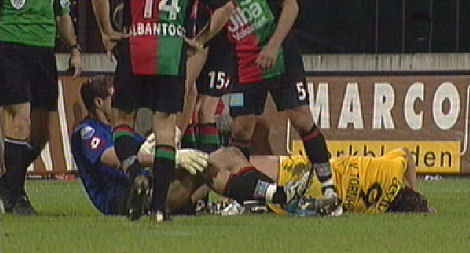
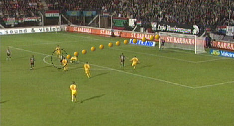

|
NEC
- Roda JC (0-0) 25 oktober 2006
|

Denneboom schudt De Jong van zich af en haalt uit. Kujovic stompt de bal weg
waarna Kah opruimt en zo een vroege achterstand voorkomt.

Nauwelijks 20 minuten gespeeld als Kah een schot van Holman weet te keren
waarna Kujovic opruimt.

Zware tackle van Baretto op Bodor. De Hongaar gaat te opzichtig neer waardoor
scheidsrechter Kuiper een zekere kaart voor de NEC'er op zak houdt.

Prachtige kopbal van Ramzi die even prachtig gekeerd wordt door Babos.

Jammer! 
Agustien redt op de doellijn door een schot van Wisgerhof weg te koppen.

Een pass van Ramzi bereikt Van Tornhout die lijkt te gaan scoren. Maar hij stuit
op Babos. Bij deze actie raakt Van Tornhout dermate geblesseerd dat hij het
veld moet verlaten.

Prima schot van Boutahar dat schitterend wordt verwerkt door Kujovic.
De wedstrijd eindigt 0-0. Op de ranglijst zakt Roda
van de 5e naar de 6e plaats.
Scheidsrechter: B. Kuipers
Toeschouwers: 11.000
Gele kaart: Eagles (N.E.C.), Saeijs, De Jong, Kah (Roda JC)
Rode kaart: -
Opstellingen:
N.E.C. : Gábor Babos; Muslu Nalbantoglu, Peter Wisgerhof, Jonas Olsson, Youssef
El-Akchaoui; Edgar Barreto, Saïd Boutahar (86' Ferne Snoyl), Mark Otten; Romano
Denneboom, Brett Holman, Chris Eagles (69' Rutger Worm).
Roda JC: Vladan Kujovic, Jan-Paul Saeijs, Pa Modou Kah, Davy de Fauw, Marcel de
Jong, Boldizsár Bodor (63' Cissé), Marcel Meeuwis, Kemy Agustien, Sekou Cissé,
Dieter van Tornhout (76' Vandamme), Adil Ramzi.
© Koempels Pleasure Dome
|